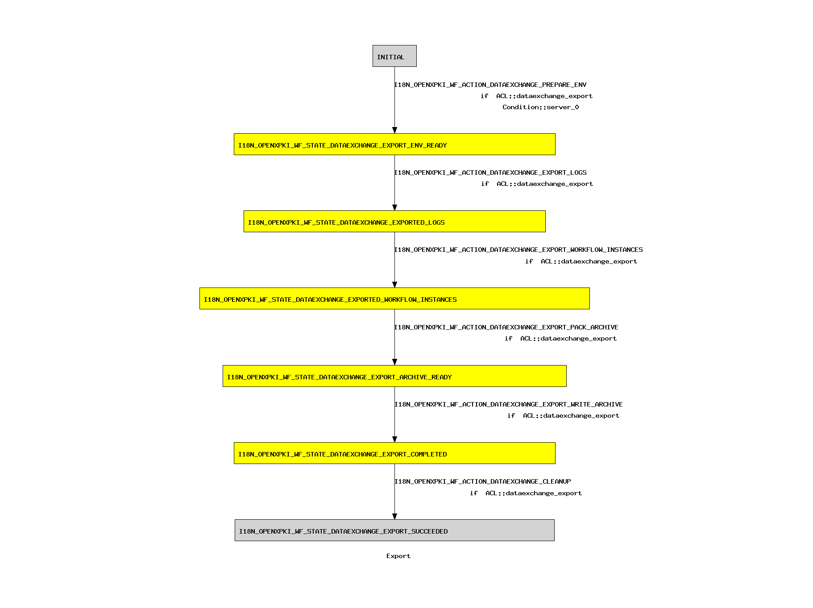

<%attr>
title => 'OpenXPKI workflows graphical representation'
</%attr>

<h1>OpenXPKI workflows' graphical representation</h1>
<h2> Workflow Export</h2>

<p>
Autorun states are yellow
</p>

<p>
You may need to pan or scroll to view a picture
</p>

<p>

<br clear="all"/></p>
